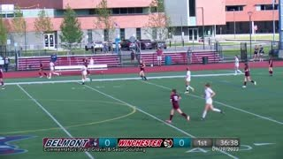

A fan saves last night's replay for lunch, and scrubbing for a goal shows the score. Flipbook reads the trickplay file the player already downloaded — one small JPEG every 10 s — marks where the score box changes and holds, and lands 30 s before the last frame with the old score. It never decodes the video.

PICTURE · 2:20 · 320×180 thumbnail
READY>> next change · << previous
2:20
86:10
The trickplay file · 517 thumbnailsengine view
0:0015:0030:0045:0060:0075:0086:00
The picture shows the present. Every thumbnail of the future is masked — hover the seek bar.A web replay of the app's own status line and seek bar, driven by the recorded scan of our development match: read order, markers and change distances are recorded; the replay's speed is not. The pictures are trickplay thumbnails at the playhead, not video.
Here is the whole development match as one contact sheet: 517 thumbnails, one every 10 s, every score box masked. We built the BIF from the CC0 broadcast with make-bif; the app on the virtual device fetched the same 6,575,564 bytes. The amber rule replays the scan's recorded read order — 66 sprocket samples first, then 11 bisect reads only where the box differed, then pass 2 through everything else.
not read yetpass 1 · sprocket (every 8th)pass 1 · bisectpass 2 · verifychange, held (highlights)
Rows run four minutes each, 0:00 to 86:00. Frames 0–2 (the opening) and 515–516 (the credits) carry no score graphic; pass 2 counts them as skipped. In the app, blind mode shows none of this — only how far the scan has read. Switch the hero to Highlights to see the two changes circled here.
What the detector sees
Three frames before, three after. It has to hold.
These are the actual pixels inside the calibrated box around the first change, unmasked. Flipbook never reads the digits: it shrinks the box to a 64×5 luma grid, takes the median of three present frames on each side, and fires only if the top-3 cell distance clears τ = 20. The marker sits on the anchor — the last frame that still shows the old score — and goes 30 s before it.
before
before
anchor
change
holds
holds
Vega virtual device · Apple M-series · Vega SDK 0.24
Running on the Vega virtual device, not in a browser.
These are captures from the Vega Virtual Device playing Amazon's own webinar trickplay file — the title the sample app itself streams, our "witness". Beside them, the device's log from the run with the detector's first build (5be6a4a), verbatim apart from the date, with elided lines marked.
pressed. The toast reads → 3:49 (−30 s lead-in); the seek bar's thumbnail area stays covered.
Scrubbing. The black block is the mask drawn over the scrub thumbnail (displayAboveThumb); on this title the calibrated box covers most of the frame.Calibration. Arrows move the box, SELECT resizes, PLAY confirms — once per broadcaster graphic.
How it works
Scan. Mark. Jump. On the device.
No backend, no feed, no model. Amazon's video sample extended with a TypeScript detector with no UI dependencies, and four Vega platform surfaces.
The file the player already has
A BIF is a contact sheet of the whole match — one JPEG roughly every 10 s, downloaded so the seek bar can preview. The sample's BIF service fetches it; one added call hands Flipbook the same bytes, and Flipbook's own parser reads them as a corpus. Amazon's tv-webinar-hd.bif has 428 frames (the first is 240×180) and a timestamp-multiplier field of 0xFFFFD8F0 — −10,000 read as a signed number — so Flipbook's parser sanity-checks the header and takes the frame interval from the player's video duration (10 s only when no duration is known).
getBifFilereadBif0xFFFFD8F0
Only the box
jpeg-js decodes each thumbnail on the device; only the calibrated rectangle becomes a 64×5 luma grid. Cells that jitter — the pitch showing through — are masked out.
jpeg-js 0.4.464×5
Two passes
Pass 1 reads every 8th frame and bisects only where the box differs: on the development match both ticks were up after 77 of 517 decodes. Pass 2 still reads all 517 and can only add.
stride 8bisect
It has to hold
Medians of three present frames on each side: a one-frame flash cannot fire, and in synthetic tests neither does a replay wipe or a dropped graphic. The anchor walks back over any graphic-absent run to the last old-score frame.
τ = 203-frame median
Fast-forward is ours
useTVEventHandler takes the ⏩ fast-forward and ⏪ rewind keys and sets currentTime to anchor − 30 s. On the VVD Flipbook's target was 199.1 s (anchor 229.1 s − 30 s), and 1.5 s later the player still reported 199.1 s — no second 30 s seek stacked on top.
useTVEventHandlerpartialDisablingConfiguration
Thumbnails stay masked
The KUI SeekBar's displayAboveThumb draws film-base black over the score box on every scrub thumbnail; before calibration, thumbnails stay off. Blind mode is the default: no ticks, no counts, only how far the scan has read.
displayAboveThumbblind by default
Four Vega surfaces
VideoPlayer (W3C media) — playback; the jump sets currentTime
KUI SeekBar — markers for ticks, displayAboveThumb for the mask
The development match was labelled by the detector's author to tune thresholds, so these numbers show the pipeline works, not how well it generalises. The held-out result waits for a human's labels.
The change distance at every frame
evidence/bench/dev-winchester-320-trace.json · D, same computation as scripts/visibility.ts
Two spikes clear τ = 20: 32.0 at 17:00 and 31.8 at 49:30. Outside those two three-frame spikes, the noisiest frame reaches 12.0 (18:50) — a 2.64× margin at 320 px, 2.04× at 240×180 letterboxed.
A plain differ cannot do it
bench · ablationBaseline: consecutive frames, every cell, no hold
Flipbook · τ 200 false · 2/2
differ · τ 8496 false · 2/2
differ · τ 12455 false · 2/2
differ · τ 16389 false · 2/2
differ · τ 20348 false · 2/2
differ · τ 25283 false · 2/2
differ · τ 30237 false · 2/2
differ · τ 40149 false · 0/2
differ · τ 5095 false · 0/2
differ · τ 6055 false · 0/2
differ · τ 8019 false · 0/2
To keep both goals the differ fires 237 false markers; raise its threshold to 40 and it misses both and still fires 149. Without the hold and the jitter mask, Flipbook itself would place 350 markers, 348 of them false.
Leads before the play: 28 s (16:20 → 16:48) and 30 s (48:50 → 49:20); 2/2 before the play, 95 % CI [0.158, 1].
Parameters frozen before any truth commit: PREREG.json, detector-params sha256 6f21e417…; the bench refuses matches A and B without a committed truth file.
Node (tsx) on Apple M-series, 20 runs — not device timings: pass 1 p50 210.8 ms, pass 2 p50 1,229.6 ms.
From the README's honest limits
Honest by design.
“Virtual device only. No Fire TV hardware was available; every on-device timing is from the Vega Virtual Device on an Apple M-series Mac; the benchmark timings are Node (tsx), not device.”
“The held-out headline is pending. … Until then no such number is claimed.”
“The numbers above come from one development match with two labelled changes, labelled by the detector's author (an AI agent, Claude Code) from 2 s stills. The 95 % confidence interval on 2/2 is [0.158, 1].”
Questions a judge would ask
FAQ
Does it really decode no video?
Yes, by construction: the scan code only ever opens the BIF's thumbnail JPEGs, decoded with jpeg-js. The bench and the device log print it — videoBytesDecoded: 0, video bytes decoded=0 — as a constant that records this, not as a measurement.
Did it run on a Fire TV?
On the Vega Virtual Device (Vega SDK 0.24.12112) on an Apple M-series Mac. No Fire TV hardware was available, so every timing says so. On the device, the calibrated scan of the development match, 19 relaunch timings and the box restored after a relaunch are captured; a dedicated 100-frame decode median is not (README, honest limit 8).
How good is it, really?
On the development match — two goals, labelled by the detector's author — it found 2 of 2 with 0 false markers, and both jumps landed before the play (95 % CI [0.158, 1]). That shows the pipeline works, not that it generalises.
The held-out number (goal jumps landing before the play on match B) will exist only after a human labels matches A and B. The parameters are frozen in PREREG.json first.
Why not read the digits?
Trickplay thumbnails are tiny — Amazon's are 240×180 — so Flipbook detects that the box changed and held, not what it says. No OCR, no ML, no LLM: arithmetic on a calibrated rectangle.
Doesn't blind mode still give something away?
A little, and the README says so: a jump tells you a change lies ahead, "No later change" tells you none does, and a goal the detector missed is skipped without any sign.
Is the footage OK to use?
The three matches are Belmont Media Center high-school broadcasts released CC0 1.0 on the Internet Archive. They show students and school marks; the marks are the schools', not ours, and CC0 does not cover trademarks. We mute the original commentary in everything we publish and use no close-ups. On this page the contact sheet and every seek-bar preview mask the score box; the stage's stills (the present, at the playhead) and the six crops show it on purpose.